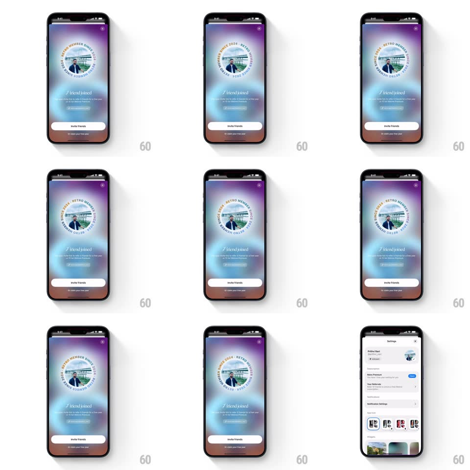

Media
Frame-by-frame

Rebuild this animation 1:1: Retro's referral modal - the full-screen sheet slides up over Settings and a circular "RETRO MEMBER SINCE 2024" badge spins continuously around the profile photo over a vibrant aurora gradient.

Rebuild this animation 1:1: Retro's referral modal - the full-screen sheet slides up over Settings and a circular "RETRO MEMBER SINCE 2024" badge spins continuously around the profile photo over a vibrant aurora gradient. ## Integration Integration: stack-agnostic spec - springs given as stiffness/damping, timed motions as duration + curve; map every value to your framework and animation library of choice. ## Scene Settings list behind; a full-screen modal with a purple/blue/pink aurora gradient: X top-right, a circular badge - profile photo at center with curved text "RETRO MEMBER SINCE 2024" ringing it - "/ friend joined" headline, body copy, and an "Invite friends" pill button. ## Motion spec Pattern: modal entrance with looping circular text, ~500ms entrance. - Entrance: the modal slides up from the bottom edge (spring ~320/26, 450ms) covering Settings edge to edge. - Badge: the ring of curved text rotates continuously around the photo (one revolution per 12s, linear, infinite); the photo is static at center. - Content: the headline, copy, and button fade up 16px in stagger (90ms steps, 300ms each) after the sheet lands. - Gradient: the aurora blobs drift slowly behind everything (25s loop). - Dismiss: X slides the sheet back down (350ms, ease-in). ## Calibration - Only the text ring rotates - the photo and the rest of the layout are still. - The spin never pauses or eases; it is a constant linear rotation. ## Reduced motion The sheet fades in (300ms); the text ring is static. ## Don't miss - The text follows a true circular path, letter by letter - not a straight line wrapped in an arc mask. - The gradient is full-bleed behind the badge, not a card.